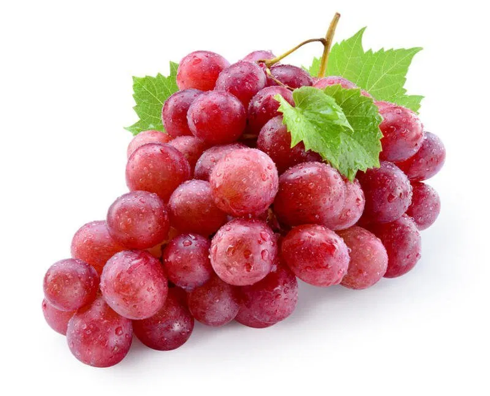

tentang buah Nanas!

Anggur
Anggur merupakan tanaman buah berupa perdu merambat yang termasuk ke dalam keluarga Vitaceae. Buah ini biasanya digunakan untuk membuat jus anggur, jelly, minuman anggur, minyak biji anggur dan kismis, atau dimakan langsung. Buah ini juga dikenal karena mengandung banyak senyawa polifenol dan resveratol yang berperan aktif dalam berbagai metabolisme tubuh, serta mampu mencegah terbentuknya sel kanker dan berbagai penyakit lainnya. Aktivitas ini juga terkait dengan adanya senyawa metabolit sekunder di dalam buah anggur yang berperan sebagai senyawa antioksidan yang mampu menangkal radikal bebas.
juga digunakan banyak jenis makanan pesta.
- Menurunkan Tekanan Darah. Manfaat buah anggur selanjutnya adalah menurunkan tekanan darah
- Mencegah Konstipasi. Manfaat anggur juga dapat mencegah terjadinya konstipasi.
- Mengurangi Gejala Alergi. Buah anggur memiliki efek antiinflamasi dari quercetin
daftar harga
| jenis Anggur | Harga | |
|---|---|---|
| per kilo | per biji | |
| Anggur Concord | 80.000 | 8.000 |
| Anggur Champagne | 45.000 | 9.000 |
| Anggur Pinot Noir | 56.000 | 8.000 |
| Anggur Kyoho | 100.000 | 10.000 |